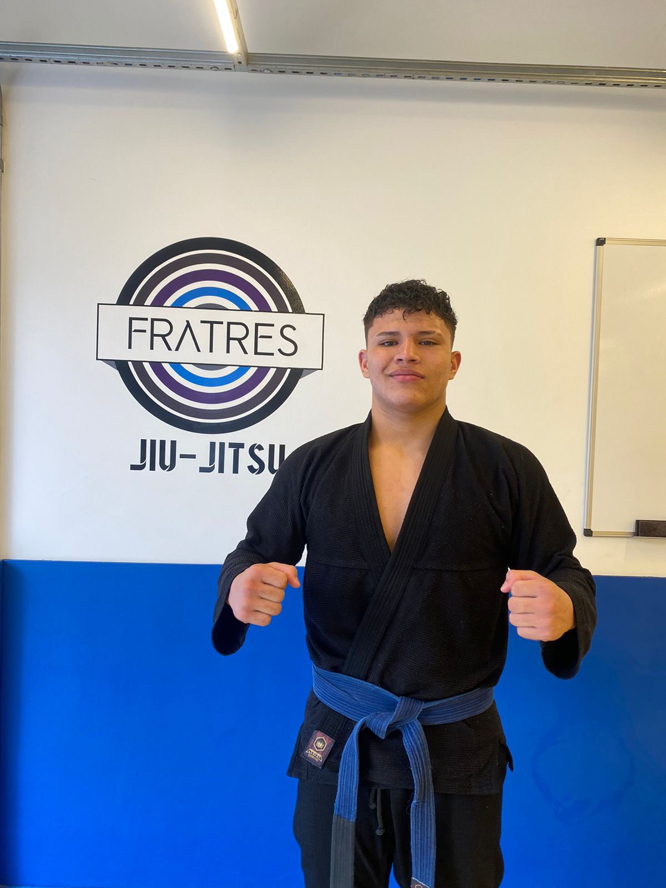
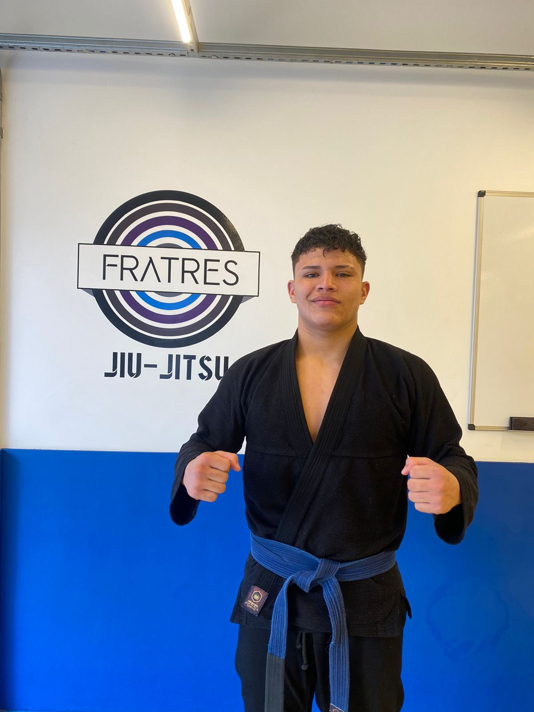

Meu nome é Arthur Cessé de Abreu , nasci em 08 de março de 2006 em campo grande MS , aos 04 anos fui morar em São Gabriel do oeste ms . Desde pequeno gosto de lutas , e em brincadeiras com meu pai , sempre gostei da parte de chão , mesmo sem saber o que era . Tive meu primeiro contato com a nobre arte aos 10 anos quando comecei a treinar no projeto social " diga não as drogas , pratique jiu-jitsu" academia SL jiu-jitsu do professor Silvio , ali comecei a vencer obstáculos na vida tais como a obesidade , timidez , falta de interação social e etc ... e claro vencendo muitas e muitas lutas e competições. Fui então obtendo êxito e graduações , conquistando vários campeonatos , medalhas e até cinturão. Competi em campeonatos estaduais , Open , brasileiro , Sul Americanos , Pan Americanos , Copas etc... Meu título de maior destaque foi o campeonato mundial em 2022 no Rio de janeiro aos 16 anos. Hoje aos 17 anos , sou faixa azul , estou na academia Fratres Matriz de são Paulo (sp) moro da casa de atletas da equipe. Gratidão a minha família ( minha base) , ao professor Silvio , ( SL jiu-jitsu) onde tudo começou , a Lucinha Jara ( Fratres MS ) que me indicou , e ao Daniel Affini líder da Fratres que me acolheu. Com garra , dedicação e muita vontade Sigo no caminho certo oss.
- Campeão Estadual infantil 2017
- Campeão Estadual infantil 2018
- 3°Lugar Campeonato Brasileiro Centro Oeste CBJJD infantil 2018
- Campeão Extremo norte infantil 2018
- Campeão GP MS infantil 2018
- Campeão Sul-americano CBJJD infantil 2019
- 3° Lugar Campeonato Brasileiro Centro Oeste CBJJD infantil 2019
- Campeão GP MS infantil 2021
- Campeão Estadual infantil 2021
- Campeão GP MS juvenil Faixa Branca 2022
- Campeão International cup CBJJD Juvenil Faixa Branca 2022
- Campeão Seletiva Brasileiro CBJJD Juvenil Faixa Branca 2022
- 3° lugar Campeonato Brasileiro CBJJD juvenil Faixa Branca 2022
- Campeão Mundial CBJJD Juvenil Faixa Branca 2022
- Bicampeão GP MS Juvenil 2022
- Campeão Campeonato Pantaneiro CBJJD Juvenil Faixa Branca 2022
- Campeão International Cup CBJJD Juvenil Faixa Azul 2023
- Vice-campeão Absoluto International Cup CBJJD Juvenil Faixa Azul 2023
- Campeão Pantanal International Juvenil Faixa Azul 2023
- Campeão absoluto Pantanal International Juvenil Faixa Azul 2023
- Campeão Extremo Norte Juvenil Faixa Azul 2023
- Campeão Absoluto Extremo Norte Juvenil Faixa Azul 2023
.jpeg) 


.jpeg)